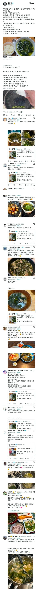

ミヨックク (미요꾸꾸)

ミヨックク (미요꾸꾸)
오래 볶을꺼면 들기름 아닌가? 참기름 향 많이 날아갈텐데
볶을땐 들기름 그냥 뿌려먹는건 참기름 아냐?
ㄴㄴ 두 기름의 향이 완전히 다름. 미역국은 들기름으로 끓이면 아예 다른 맛이남
소금간이라니...
진작좋아했을법한데
여기저기 미역도 많이 넣어왔잖아
미소시루 미역이 맛없는 이유가 미역국미역은 잘 볶아서 써서 그런거였구나
아 좆됐다 내 미역..
신기한 게 일본이랑 우리랑 같은 식재료를 쓰는데 맛내는 법이 완전 다른 음식들이 있음. 미역국 같은 경우엔 육식문화의 역사가 짧아서 그런가 싶음.
ㄹㅇ 쟤내 미역스프 이상함
볶을필요도없어. 미역국은 무조건 오래끓이면 됨.
아냐 볶을 때 참기름이나 들기름에 지져지면서 배어들어가는 맛이 또 있음여기에 간장 약간 넣어서 볶으면 좀더 감칠맛 있어지고
같은 원리로 김치찌개 할 때도 김치와 고기를 먼저 기름에 볶다가 물을 부워서 끓이면 그먕 끓일때랑 녹진함의 차원이 다름
미요꾸끄꾸
쟤들도 미역은 익숙하니까 미역국 맛들이면 한끼 뚝딱이겠지
미역국에 비엔나 쏘세지 야채볶음 조합을 찾아내는데 얼마나 걸릴까
존나맛있제? 마이 무라 ㅋㅋ
아니 씹 미역값도 오르겠네
맛있긴해..
그냥 레토르트 사다놓고 뜯어서 밥말아서 데워먹어도 한끼든든
난 미역국 싫어해
대량으로 오래끓이면 맛이 없을수가 없지
궁극의 감칠맛이 담긴 음식이긴함ㅋㅋㅋ
확률분포표 아님?
미역국 맛있긴 한데 다른 국보다 김치를 더 필요로 해
저거 소기름에 볶으면 더 존맛탱인데ㅋㅋㅋㅋㅋㅋ
소고기 마이야르 일으켜서 빼두고 거기에 미역볶은다음
한솥끓여서 마지막에 참기름 둘러주면 눈물흘림
소고기 넣을거면 국간장+소금으로만 간하고 약불에 오래 푹 끓이면 다시다 필요없음
난 미역국에 들깨가루 넣는건 사도라고 생각한다
뭘 아는사람
들기름? 참기름이지 시발